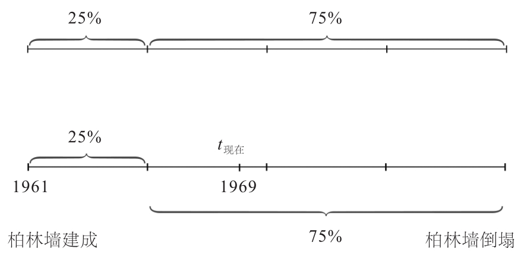

1961年8月13日，柏林墙开始建造。美国数学家、物理学家J.理查德·高特（J. Richard Gott）在柏林墙建成8年后拜访了这座城墙。在柏林墙脚下他暗自提问，这座城墙还能屹立多久不倒塌。他并没有通过分析复杂的世界政治局势来预测柏林墙倒塌的时间，而是仅仅通过完全随机的概率论技巧得出了结论。
高特当时预计柏林墙倒塌时间的逻辑是这样的：他先将柏林墙一共存在的时间分为四段：0—25%、25%—50%、50%—75%、75%—100%。根据“哥白尼原则”，任何观察者都没有特殊之处，因此他将他自己的这次到访看作是完全随机的事件。他这次随机来访位于柏林墙存在的25%—75%这段时间的可能性为50%（置信概率为50%(1)）。为了增强预测的可信度，他将置信概率设置为75%，即有75%的可能性他的来访在25%—100%这个区间内。如果他这次的来访时间t现在正好在第二个区间的开始，即正好位于25%处，则柏林墙最多还可以再坚持已存在时间的3倍长的时间，也就是说柏林墙最多会再存在3×8=24年，即柏林墙会在1993年之前倒塌的概率为75%。事实上，柏林墙是在1989年倒塌的，这一事实也正好符合高特的预测。

理查德·高特的预测方法图解
这个预测方法虽然简单，但同时也堪称绝妙。这种方法仅仅利用已知的时间区间来推算某一随机事件在未来持续的时间。我们也可以用这种方法预测最喜欢的杂志继续发售的时间，或是预测人类灭亡的时间。
这种方法的简单之处在于，它只强调从一个完全随机的时间点出发，利用这个时间点计算出已经持续存在的时间间隔，然后来预测所研究事物的整个存在时间。关键的是，只有在观测的时间点是完全随机的时候，这种预测方法才会生效。如果你的朋友在婚后不久邀请你去参加他们的第一场结婚派对，你如约而至，并且想利用这个技巧预测他们的婚姻持续的时间，这就大错特错了，因为婚后第一次派对这个时间点并不是完全随机的，并不符合“哥白尼原则”。
高特的方法在这些情境中非常适用：你在某地游玩，一个朋友邀请你去参加一场体育盛会。关于这个活动你所知甚少，于是你询问你的朋友参会者有多少人。这时候你发现你自己的门票上写着37这个数字，怎么才能利用这个数字来猜测整个体育场共有多少观众呢？
当我们设定置信概率为50%时，你票根上面的数字37表示，它有50%的可能性属于所有卖出的票中的后半区间，也就是最多有73位观众的可能性为50%。因为如果卖出了74或者大于74张票，你的门票上面的37号就应该处于前半区间。
表示计算可信度的概率为置信概率。如果人们希望计算得出的结果准确，则可以将置信概率提高到80%、90%、95%，甚至是更大的数字。如果设定置信概率为90%，那么便可以得知，37号是所有卖出号码的前1/10的概率有10%，即已售卖的票的1/10中至少包含37张票。换句话说，总人数至少为10×37=370的概率是10%，而总人数少于370的概率为90%。你可以由此确信，你的朋友并没有把你带到一个人山人海的活动中。
现在轮到你了：有个人正在给你朗读他最爱的选段，他顺口提了一下这是整本书的第27页。如果置信概率是95%的话，你能估计出整本书有多少页吗？
(1) 置信概率是用来衡量统计推断可靠程度的概率，置信概率与置信区间有关。一般我们把“测量值的误差在（－δ，+δ）的概率为P”这一句话叙述为“置信区间（－δ，+δ）的置信概率为P”。在实际计算中，置信概率可以理解为常数，预测者希望预测有多少可靠性，就可设置为相关数值。